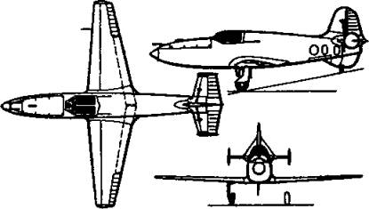

В годы войны
ЭПОПЕЯ БИ. Арест Королева отбросил его с передовых позиций в создании ракетных самолетов. Дальше пошли другие. В частности, летом 1940 года РНИИ посетили два инженера из ОКБ В. Ф. Болховитинова. Это были начальник бригады механизмов Александр Яковлевич Березняк и начальник бригады двигателей Алексей Михайлович Исаев. Здесь они познакомились с конструктором Л. C. Душкиным, который как раз работал над жидкостно-реактивным двигателем для стартового ускорителя реактивного истребителя «302», создававшегося тогда в институте. Вероятно, Душкин сумел заинтересовать двух инженеров-самолетостроителей идеей, оставшейся в наследство от Королева. И они по своей инициативе начали разработку эскизного проекта истребителя нового типа, который должен был развить скорость более 800 км/ч.
Предполагалось, что он будет оснащен двигателем Д-1А (конструкции Леонида Душкина и Владимира Штоколова) и станет одним из первых в мире действительно летающих ракетопланов.
Начавшаяся война не приостановила, а, напротив, подстегнула интенсивность работ над БИ — такое обозначение получил новый истребитель по первым буквам фамилий конструкторов. Гитлеровцы рвались к Москве, и скоро наша столица стала подвергаться первым бомбежкам. Вот тут бы как раз и пригодились скоростные и высотные перехватчики.
Свои соображения авторы проекта изложили в письме на имя Верховного главнокомандующего, которое, кроме них, подписали конструктор двигателя Л. С. Душкин, директор завода В. Ф. Болховитинов и главный инженер РНИИ А. Г. Костиков. Вскоре все заинтересованные лица были вызваны в Кремль для личного доклада. Предложение инженеров было одобрено, и постановлением Государственного комитета обороны, подписанным Сталиным, бюро Болховитинова поручалось в кратчайший срок (35 дней) создать истребитель-перехватчик, а НИИ-3 (так к тому времени назывался РНИИ) — двигатель РДА-1-1100 для этого самолета.
ОКБ Болховитинова было переведено «на казарменное положение», работали, не выходя с завода. За 35 суток все-таки не успели, но 1 сентября, с опозданием лишь на пять дней, первый экземпляр самолета был отправлен на испытания.
Правда, на аэродроме были прежде всего начаты пробежки и подлеты на буксире, поскольку силовая установка еще дорабатывалась. За полтора десятка полетов аппарата в планерном варианте на буксире за самолетом Пе-2 летчик Борис Кудрин выявил все основные летные характеристики БИ на малых скоростях. Испытания подтвердили, что все аэродинамические данные самолета, характеристики устойчивости и управляемости соответствуют расчетным.
Более того, Кудрин и другие летчики, управлявшие планером БИ, доказали, что после выключения ракетного двигателя перехватчик с высоты 3000–4000 м способен вернуться на свой или другой ближайший аэродром в режиме планирования.
Однако, как ни торопились наши рабочие и конструкторы, немцы их опередили — их войска вплотную подошли к Москве. И 16 октября 1941 года, в самый разгар гитлеровского наступления на столицу, КБ и завод Болховитинова были эвакуированы на Урал.
Здесь, в небольшом поселке Билимбай (60 км западнее Свердловска) в декабре 1941 года «переселенцам» была выделена территория старого литейного завода для дальнейшей работы.
Вместо заболевшего летчика-испытателя Кудрина командование ВВС прикомандировало к КБ капитана Григория Бахчиванджи, который почти сразу едва не погиб на одном из наземных испытаний. А именно — 20 февраля 1942 года при запуске двигателя на испытательном стенде произошел взрыв. Пострадали двое: пилота швырнуло головой на приборную доску, а находившегося рядом с кабиной Арвида Палло обдало струей азотной кислоты. Обоих отправили в больницу. К счастью, Бахчиванджи отделался легким сотрясением мозга, а глаза Палло спасли очки, хотя ожоги на лице остались у него на всю жизнь.
В марте стенд был восстановлен, наземные испытания продолжались. Затем 25 апреля самолет был переправлен из Билимбая на аэродром НИИ ВВС в Кольцово, где 30 апреля провели два последних контрольных запуска двигателя на земле.
Самолет был готов к первому полету.
Он состоялся 15 мая 1942 года и продолжался чуть более 3 минут. По воспоминаниям очевидцев, взлетел БИ-1 стремительно. В полете Бахчиванджи сумел совершить лишь пару маневров, как топливо кончилось, и пришлось заходить на посадку с уже не работающим двигателем. Она получилась жесткой. Одна стойка шасси подломилась, колесо отскочило и покатилось по аэродрому'.
Несмотря на это, конструкторы были очень довольны. Ведь самописцы зафиксировали максимальную высоту полета 840 метров, скорость — 400 км/ч, скороподъемность — 23 / — весьма неплохие показатели для того времени.
Поскольку планер БИ-1 был к тому времени уже основательно изъеден кислотой, ремонтировать самолет не стали, а выкатили на аэродром два новых экземпляра самолета, получившие, соответственно, индексы БИ-2 и БИ-3. На них и стали проводить дальнейшие испытания.
Одновременно было принято решение начать постройку небольшой серии самолетов БИ-ВС для их войсковых испытаний. От опытных самолетов БИ-ВС отличались вооружением: в дополнение к двум пушкам под фюзеляжем по продольной оси самолета перед кабиной летчика устанавливалась бомбовая кассета, закрытая обтекателем.
Впрочем, с закладкой серийной партии, похоже, поторопились. Второй полет опытного самолета БИ состоялся лишь 10 января 1943 года — более полугода понадобилось на устранение дефектов двигателей, приведение их в рабочее состояние.
Затем в короткий срок было выполнено четыре полета: три летчиком Бахчиванджи и один (12 января) летчиком-испытателем Константином Груздевым, на самолете которого перед посадкой оторвалась одна лыжа. Сам пилот прокомментировал свои ощущения так: «И быстро, и страшно… Как черт на метле». А Бахчиванджи как-то сказал в тесном кругу знакомых: «Этот самолет меня убьет».
Тем не менее испытания продолжались. Они закончились седьмым полетом, состоявшимся 27 марта 1943 года. По наблюдениям с Земли, поначалу, вплоть до конца работы двигателя на 78-й секунде, все шло нормально. Однако после окончания работы двигателя самолет опустил нос, вошел в пикирование и врезался в землю. Бахчиванджи погиб. Только в 1973 году, через 30 лет после гибели, ему было присвоено звание Героя Советского Союза.

Схема самолета-перехватчика БИ-1.
Впоследствии при продувках модели самолета в аэродинамической трубе было установлено, что причиной катастрофы мог стать флаттер. Суть этого явления состоит в том, что при больших скоростях крылья самолета с дозвуковым профилем не выдерживают нагрузки, начинают резко вибрировать, полет становится неуправляемым.
После гибели Бахчиванджи недостроенные самолеты БИ-ВС были демонтированы, но испытания опытных образцов все еще продолжались. В одном из них, проходившем в январе 1945 года, по возвращении КБ в Москву, летчик Борис Кудрин тоже едва не погиб из-за сильной внезапной вибрации хвостового оперения. Стало очевидно, что запустить БИ в серию так и не удастся. Работы над этой машиной были прекращены.
ДРУГИЕ ПОПЫТКИ. К тому времени до наших разработчиков стали доходить слухи, что немцы ставят на свои самолеты не ракетные, а воздушно-реактивные двигатели, эксплуатировать которые несравненно проще.
Это подстегнуло тех наших конструкторов, которые вынашивали планы создания подобных самолетов еще до войны. Так, в том же РНИИ в 1940 году были начаты работы по проектированию истребителя с необычной силовой установкой, состоявшей из одного разгонного ЖРД и двух прямоточных воздушно-реактивных двигателей.
Сконструировала эти прямоточные воздушно-реактивные двигатели (ПВРД) группа под руководством талантливого конструктора Юрия Александровича Победоносцева. Первую действующую модель они создали еще в апреле 1933 года, когда назывались третьей бригадой ГИРДа.
Причем, поскольку прямоточные двигатели начинают работать только на очень большой скорости, когда воздух, входящий в горючую смесь, сжимается вследствие напора встречного потока воздуха, исследователи нашли весьма оригинальный способ испытаний своих моделей. Миниатюрный воздушно-реактивный двигатель вставляли вместо боевой части в артиллерийский снаряд и выстреливали его из пушки. В полете двигатель включался и развивал тягу, величину которой определяли по прибавке дальности у снаряда с двигателем по сравнению с обычным.
В общем, когда стало понятно, что создать ракетоплан БИ быстро не удастся, ставку сделали на проект «302». Для его реализации А. Г. Костиков был назначен главным конструктором ОКБ-55 и директором опытного завода. Начальником ОКБ стал авиаконструктор М. Р. Бисноват.
К весне 1943 года опять-таки выявилось, что двигателисты не могут довести в срок ПВРД конструкции инженера Зуева. ЖРД конструкции Душкина Д-1А-1100 также еще не был готов. Пришлось опять-таки ограничиться летными испытаниями планера, а до создания настоящего самолета дело так и не дошло.
Еще один проект истребителя-перехватчика разрабатывал Р. Л. Бартини (Роберто Орос да Бартини) — итальянский барон, коммунист, переехавший на постоянное местожительство в СССР. В 1937 году он был арестован по «делу Тухачевского» и оказался в «шарашке», или, говоря иначе, Центральном конструкторском бюро № 29 (ЦКБ-29) НКВД. Здесь в начале 1942 года Бартини и получил персональное задание Л. Берии.
Конструктор предложил два варианта, причем один из них — Р-114, истребитель-перехватчик с четырьмя РД-1 конструкции Глушко — должен был развивать невиданную для 1942 года скорость — более 2000 км/ч! Однако и этот проект не был доведен до стадии практической реализации.
Не удалось создать и свой самолет-перехватчик «РП» С. П. Королеву, которому в 1939 году Особое совещание НКВД изменило статью приговора, а заодно и срок — с 10 лет до двух лет. Его вернули с Колымы, и он попал в ту же «шарашку», ЦКБ-29, где работал в группе Андрея Туполева над проектом бомбардировщика «103» (Ту-2).
Параллельно Королев попытался вернуться к прерванной арестом работе над ракетопланом с ЖРД. Однако все опять-таки уперлось в отсутствие достаточно надежного и мощного двигателя.
Единственное, чего удалось добиться Королеву практически, так это оснастить ракетными ускорителями конструкции В. П. Глушко пикирующий бомбардировщик Пе-2. Самолет после этого получил возможность забираться на такую высоту, что истребители противника его уже не доставали. Однако сколько-нибудь широкого распространения и эта конструкция не получила.
Были также попытки оснастить ракетными ускорителями истребители Ла-5 и Ла-7, чтобы они могли перехватывать высотные немецкие самолеты-разведчики, идущие к нашим городам. Но тут война повернула на Запад, наша авиация стала господствовать в воздухе, и необходимость в таких специализированных перехватчиках отпала.
Правда, в 1945 году летные испытания все-таки прошел самолет Як-3, который при включенном ракетном ускорителе прибавлял сразу свыше 180 км/ч. Своеобразным признанием успехов Королева и Глушко стало также участие самолета Лa-120P с ракетными ускорителями в воздушном параде, состоявшемся 18 августа 1946 года в Тушине. Но это все опять-таки были экспериментальные машины.